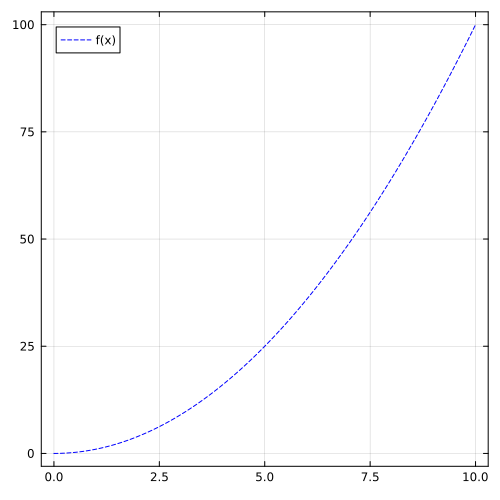
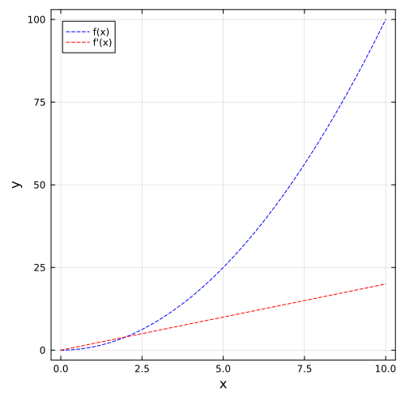
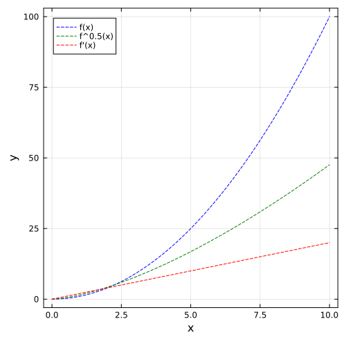
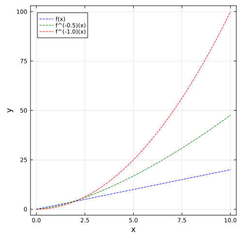

Usage
using NumFracDiffHere we show a few brief examples for the usage of the library
First case
First, we define the input signal y (as a vector of floats) and the time step dt with respect to which we want to differentiate. We will plot the analytical function using the Plots.jl library.
using Plots
dt=0.001
x = collect(0:dt:10.0)
y = x.^2
plt = plot(size = (500, 500))
plot!(plt, x, y,
linestyle=:dash,
color=:blue,
label="f(x)",
Next we instantiate the needed structures. NumDiffProblem defines the configuration of the derivative, while Workspace allocates the auxiliary vectors needed for the computation and stores the final result.
method = GL()
problem = NumDiffProblem(dt=dt,order=1.0,n=length(y),method=method)NumDiffWorkspace{Float64}([1.0, -1.0, -0.0, -0.0, -0.0, -0.0, -0.0, -0.0, -0.0, -0.0 … -0.0, -0.0, -0.0, -0.0, -0.0, -0.0, -0.0, -0.0, -0.0, -0.0], [0.0, 0.0, 0.0, 0.0, 0.0, 0.0, 0.0, 0.0, 0.0, 0.0 … 0.0, 0.0, 0.0, 0.0, 0.0, 0.0, 0.0, 0.0, 0.0, 0.0])To execute the computation, invoke the compute! function. This mutates the workspace in-place.
compute!(y,problem,workspace)
plot!(plt, x, workspace.deriv,
linestyle=:dash,
color=:red,
label="f'(x)",
framestyle = :box)
xlabel!("x")
ylabel!("y")
plt
Second case
You can update the derivative order (e.g., to a fractional derivative) directly on the existing structures without reallocating memory or creating new objects.
update_order!(problem,workspace,0.5)
compute!(y,problem,workspace)
plt1 = plot(size = (500, 500))
plot!(plt1, x, y,
linestyle=:dash,
color=:blue,
label="f(x)",
framestyle = :box)
plot!(plt1, x, workspace.deriv,
linestyle=:dash,
color=:green,
label="f^0.5(x)",
framestyle = :box)
compute!(workspace.deriv,problem,workspace)
plot!(plt1, x, workspace.deriv,
linestyle=:dash,
color=:red,
label="f'(x)",
framestyle = :box)
xlabel!("x")
ylabel!("y")
plt1
Third case
The library can be used to integrate as well, using a negative order.
y= x .* 2
update_order!(problem,workspace,-0.5)
compute!(y,problem,workspace)
plt2 = plot(size = (500, 500))
plot!(plt2, x, y,
linestyle=:dash,
color=:blue,
label="f(x)",
framestyle = :box)
plot!(plt2, x, workspace.deriv,
linestyle=:dash,
color=:green,
label="f^(-0.5)(x)",
framestyle = :box)
compute!(workspace.deriv,problem,workspace)
plot!(plt2, x, workspace.deriv,
linestyle=:dash,
color=:red,
label="f^(-1.0)(x)",
framestyle = :box)
xlabel!("x")
ylabel!("y")
This page was generated using Literate.jl.